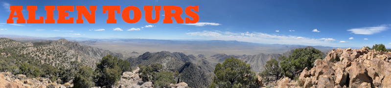
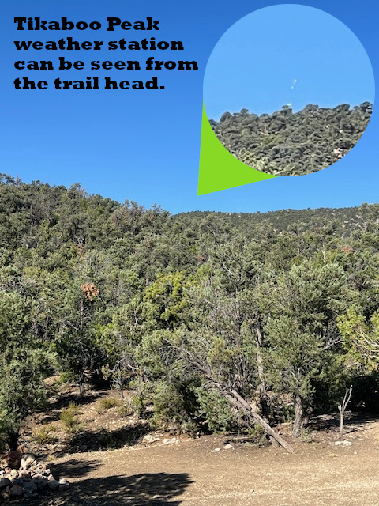
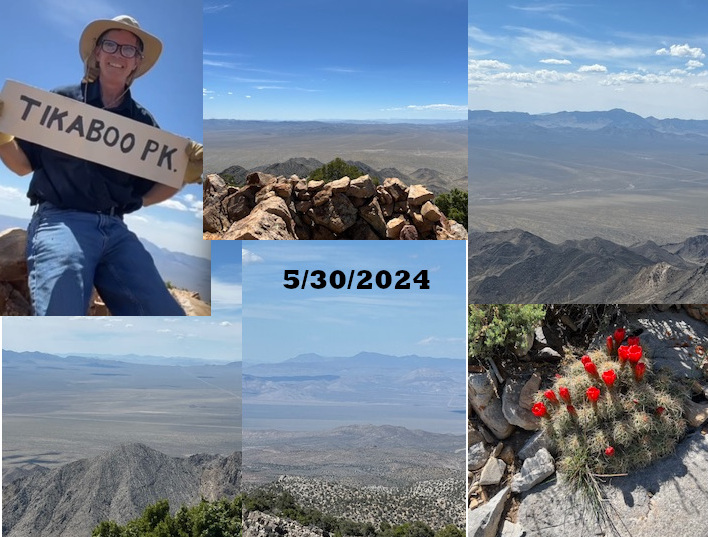
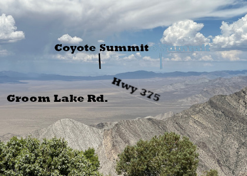

Alien Tours – Tikaboo Peak Experience
By Lewis Whitten

Tikaboo Peak: Looking Back—and Hopefully Forward
Welcome to Alien Tours. Tikaboo Peak has long been one of my favorite places in Nevada. I made the climb many times, sometimes with friends, and eventually learned the trail well enough to reach the summit without relying on GPS.
The appeal was always about more than Area 51. It was the drive through remote Nevada desert, the challenging climb, the mountain scenery and the satisfaction of reaching a place few people ever visited.
My Trips Up Tikaboo
Each trip began with about an hour of driving from Alamo along rugged dirt roads. The hike started on a wide red-shale path before narrowing into a much steeper climb through the trees.
That middle section was demanding. The loose gravel made footing difficult, and the trail could be surprisingly easy to lose—especially on the way down. Over repeated visits, I learned the important turns and landmarks that kept me on course.

After the steepest section, the trail opened onto a broad plateau. The valley stretched below, and the equipment near the summit finally came into view. From there, one last climb led to the top.
The View
At 7,915 feet, Tikaboo Peak offered an extraordinary view across the Nevada desert. On a clear day, the buildings and runways at Groom Lake—better known as Area 51—could be seen about 26 miles away.
It was a distant view, especially without binoculars or a long camera lens, but it was real. Following the 1995 closures of Freedom Ridge and White Sides, Tikaboo became the closest legal public viewpoint overlooking the base.
The rest of the panorama was just as memorable: desert valleys, mountain ranges and miles of largely untouched country in every direction.

The 2026 Closure
On March 25, 2026, the Bureau of Land Management temporarily closed approximately 22,987 acres surrounding Tikaboo Peak to public access. The official order is for one year and is subject to reevaluation following additional assessments.
The BLM describes the closure as a public-safety measure. I find that explanation difficult to accept without more evidence. Tikaboo was certainly strenuous, but I am not aware of a history of serious accidents there. Plenty of public lands across the West—from rugged BLM country to Death Valley—present far greater challenges while remaining open with appropriate warnings.
The size of the closure also raises questions. Closing nearly 23,000 acres to address concerns about one remote trail seems excessive, particularly when Tikaboo happened to provide the closest public view of one of the most secretive military facilities in the country.
For now, however, the closure is legally described as temporary. Government measures called “temporary” have an unfortunate habit of becoming permanent—income tax and taking the dollar off the gold standard come to mind—but perhaps Tikaboo Peak will be the exception. I remain hopeful that public access will be restored after the one-year period.
Tikaboo was the closest public viewpoint, but it was not the only mountain from which Area 51 could be seen. Reveille Peak, northwest of Rachel, reportedly offers a much more distant view from approximately 45 miles away.
Until Tikaboo reopens, this page is a record of my earlier journeys—not an encouragement to enter the closed area. The official announcement, closure map and order can be found on the Bureau of Land Management website.

Looking Back
I am grateful for the many trips I made to Tikaboo Peak while it remained open. I remember the long drive, the steep climb, the occasional wrong turn and the feeling of finally standing at the summit.
Some people went for the hike, some for the view and some for the mystery beyond the ridge. For me, it was always a little of all three.
Hopefully, Tikaboo Peak will reopen—and this page can once again become a story about returning.